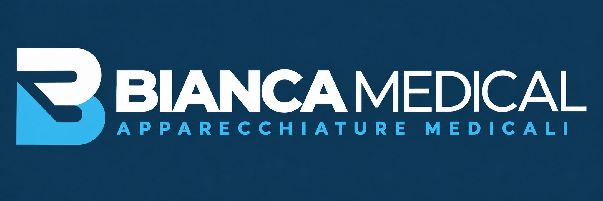
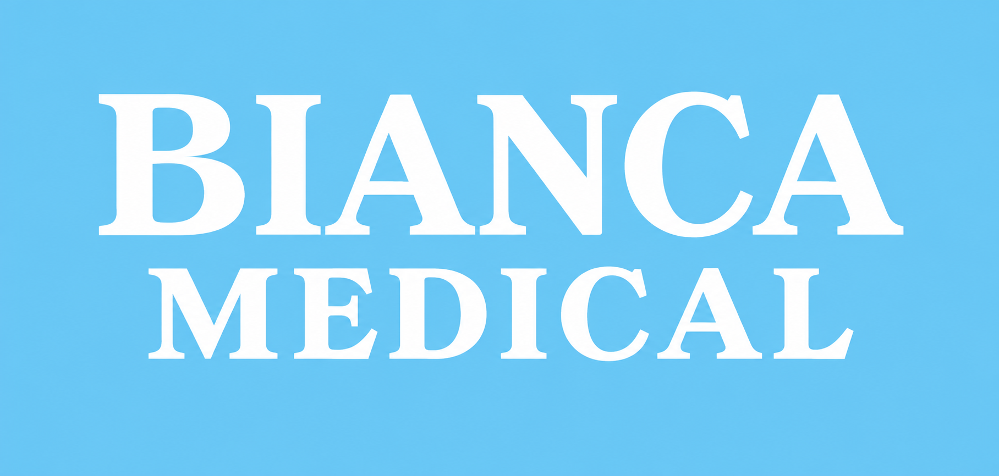

Prodotti per le esigenze della struttura
Un’offerta medico-chirurgica che comprende apparecchiature elettromedicali, strumentario e accessori. Competenza e attenzione nella scelta dei prodotti destinati all’attività clinica e assistenziale.


FOLIGNO · UMBRIA · DAL 1990
01 / BIANCAMEDICALApparecchiature, dispositivi e strumentario medicale.
Al servizio delle strutture sanitarie.
Apparecchiature, dispositivi medici e strumentario per ospedali e aziende sanitarie.
Attenzione alle esigenze della struttura, cura del servizio e supporto nella scelta.
Nel cuore dell’Umbria, Biancamedical affianca la sanità pubblica e privata nella commercializzazione e distribuzione di apparecchiature elettromedicali, accessori e materiali di consumo.
Una gamma di prodotti medico-chirurgici per le esigenze quotidiane degli operatori, con assistenza tecnica sulle apparecchiature qualora richiesta.
Dalle apparecchiature agli accessori e ai materiali di consumo: un riferimento per le esigenze di ospedali, aziende sanitarie e strutture private.
Un’offerta medico-chirurgica che comprende apparecchiature elettromedicali, strumentario e accessori. Competenza e attenzione nella scelta dei prodotti destinati all’attività clinica e assistenziale.
Forniture per reparti ospedalieri, sale operatorie e ambulatori: dalle attrezzature ai materiali d’uso quotidiano, con una gamma articolata per le diverse aree di intervento.
Su richiesta, Biancamedical offre assistenza tecnica per le apparecchiature elettromedicali. Contattaci per descrivere l’esigenza e conoscere le possibilità di intervento.
Ospedali e aziende sanitarie · Strutture sanitarie private · Ambulatori
Contatta BiancamedicalUn percorso che nasce a Foligno e mantiene nel tempo il legame con la sua identità.
Un’esperienza decennale nella vendita e nell’assistenza di attrezzature elettromedicali precede la costituzione di Biancamedical. È la base professionale da cui prende forma il progetto di Paolo Clementi.
Biancamedical nasce dall’iniziativa imprenditoriale di Paolo Clementi, con l’obiettivo di affermarsi come realtà di riferimento nella distribuzione di apparecchiature elettromedicali per il settore sanitario.
Il progetto nasce con un obiettivo preciso: servire la sanità pubblica e privata con un’ampia gamma di prodotti medico-chirurgici. L’attività comprende commercializzazione, distribuzione e assistenza tecnica su richiesta, per rispondere alle esigenze degli operatori sanitari.
Il forte legame con il territorio umbro e la centralità delle persone guidano le nostre partnership con i professionisti della salute. La nostra sede di Foligno, in Via Gran Sasso 25, è il punto di riferimento per la fornitura e il supporto di tecnologie elettromedicali.
Una gamma che attraversa le diverse esigenze della struttura.
Apri un’area per conoscere le principali tipologie di prodotti.
Apparecchiature, dispositivi e articoli per il settore sanitario. Trova un prodotto per nome o codice e apri la sua scheda. Puoi anche consultare le categorie o scaricare il catalogo completo.
Test, analisi e strumenti per il laboratorio.
Dispositivi di protezione e abbigliamento professionale.
Strumenti, set e accessori per l’attività chirurgica.
Borse e soluzioni per il trasporto del materiale medicale.
Strumenti di pesatura e misurazione.
Ausili e articoli per l’assistenza e la mobilità.
Arredi e attrezzature per ambienti sanitari.
Apparecchiature per fisioterapia e trattamenti strumentali.
Strumentazione e dispositivi specialistici.
Apparecchiature e accessori per elettrochirurgia.
Sistemi ottici, caschetti e strumentazione endoscopica.
Illuminazione per visita e attività clinica.
Strumenti e apparecchiature per la diagnostica.
Strumenti per la valutazione uditiva e respiratoria.
Elettrocardiografi, monitor e apparecchiature ecografiche.
Attrezzature e materiali per emergenza e medicazione.
Apparecchiature, materiali e accessori per sterilizzazione.
Strumentazione e apparecchiature per uso veterinario.
Modelli per la formazione e la dimostrazione anatomica.
Nessun prodotto trovato. Prova il nome specifico dell’articolo o il codice riportato nel catalogo.
Per disponibilità, informazioni tecniche e richieste di fornitura, indica il codice prodotto riportato nel catalogo.
Richiedi informazioni ↗Per una richiesta di fornitura o di assistenza tecnica, scrivici indicando il prodotto o l’apparecchiatura di interesse. Ti aiuteremo a individuare il riferimento per la tua esigenza.
Scrivi a Biancamedical ↗